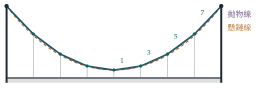

STEP I 1991，第 10 題
繼續之前，請先閱讀題目（原題為英文）。題目載於 STEP Support Programme 的題目資料庫： step.maths.org/questions/91-s1-q10
引子
用手拿着一條鏈的兩端，它便會垂成一條稱為懸鏈線（catenary）的曲線（此名源自拉丁文的「鏈」字）。伽利略（Galileo）以為它是拋物線（parabola），其實不然，少年時代的惠更斯（Huygens）在 1646 年已證明了這一點。不過，若像懸索橋（suspension bridge）那樣，用等距排列的吊桿把沉重的路面掛在鏈上，鏈確實會形成拋物線。分別在於重量如何分佈：懸鏈線的重量沿彎曲的鏈身分佈，而橋的重量則沿水平方向均勻分佈。
本題只需在每個節點分解力（resolving forces），便能證明這條拋物線。關鍵在於張力（tension）的水平分量在整條鏈上處處相同，所以每一段的斜率都與它所承托的重量成正比。結果是一個優美的規律：相鄰節點之間的落差按奇數 \(1, 3, 5, 7, \ldots\) 遞增，而這些奇數的部分和（partial sums）正是完全平方數。
動筆之前
在每個節點 \(A_i\) 上有三個力作用：相鄰兩段鏈的張力，以及吊桿上所掛的重量 \(w\)。重量無法影響張力的哪一個分量？
重量是鉛垂的，所以在每個節點上，兩個張力的水平分量必須互相平衡。因此，張力的水平分量（設為 \(H\)）在鏈的每一段都相同。
逐步解題
階段 1 每個節點上的方程
設線段 \(A_{i-1}A_i\) 與水平線所成的俯角為 \(\phi_i\)（由 \(A_{i-1}\) 向中間方向量度），則其張力 \(T_i\) 的水平分量為 \(T_i\cos\phi_i\)，鉛垂分量為 \(T_i\sin\phi_i\)。對 \(1 \leq i \leq n\)，在 \(A_i\) 分解力： \[T_i\cos\phi_i = T_{i+1}\cos\phi_{i+1} = H, \qquad T_i\sin\phi_i - T_{i+1}\sin\phi_{i+1} = w.\] （外側的一段向上向外拉，鉛垂分量較大；內側的一段向內並稍微向下拉；兩者之差承托着吊桿。）
在中間的節點 \(A_{n+1}\) 會怎樣？試利用橋的對稱性。
由對稱性，在 \(A_{n+1}\) 相接的兩段互為鏡像，所以各自承托該吊桿的一半重量：\(T_{n+1}\sin\phi_{n+1} = \frac12w\)。
階段 2 由重量求斜率
由中間向外逐段計算，鉛垂分量為 \[T_{n+1}\sin\phi_{n+1} = \tfrac12w, \quad T_n\sin\phi_n = \tfrac32w, \quad\ldots,\quad T_1\sin\phi_1 = \tfrac{2n+1}{2}w.\] 把各式除以 \(H\)，得斜率為 \(\tan\phi_i = \frac{(2(n + 1 - i) + 1)w}{2H}\)。線段 \(A_{i-1}A_i\) 的斜率同時等於 \(\frac{y_{i-1} - y_i}{h}\)，所以 \[\frac{y_n - y_{n+1}}{h} = \frac{w}{2H}, \qquad \frac{y_{n-1} - y_n}{h} = \frac{3w}{2H}, \qquad\ldots,\qquad \frac{y_0 - y_1}{h} = \frac{(2n + 1)w}{2H}.\] 取倒數後再乘以相應的奇數，可知 \(\frac{h}{y_n - y_{n+1}}\)、\(\frac{3h}{y_{n-1} - y_n}\)、…、\(\frac{(2n + 1)h}{y_0 - y_1}\) 各項均等於 \(\frac{2H}{w}\)。■
階段 3 拋物線
設 \(j\) 為由中間向外數的節點序數，使得 \(A_{n+1-j}\) 與 \(A_{n+1}\) 的水平距離為 \(jh\)。它比 \(A_{n+1}\) 高出多少？
把各段落差相加，並設 \(c = \frac{wh}{2H}\)： \[y_{n+1-j} - y_{n+1} = c\bigl(1 + 3 + 5 + \cdots + (2j - 1)\bigr) = cj^2.\] 若 \(x\) 由中間量起，則 \(x = jh\)，所以該點高出最低節點 \(\frac{c}{h^2}x^2 = \frac{w}{2Hh}x^2\)。由對稱性，另一邊亦然，而兩個支承點（\(j = n + 1\)）也符合同一公式。因此所有點都位於拋物線 \[y = y_{n+1} + \frac{w}{2Hh}(x - x_{n+1})^2. \qed\] 上。

回顧
找出不變的量。只有鉛垂負載時，水平張力處處相同。
由中間開始累加。每一段都承托它與中間之間的全部重量，所以鉛垂分量每次增加 \(w\)。
奇數之和是平方數。\(1 + 3 + \cdots + (2j - 1) = j^2\) 把一列斜率變成了一條拋物線。
背後的數學
拋物線還是懸鏈線？
把上述論證改為連續的版本，便能同時解釋這兩條曲線。對於一條水平張力恆為 \(H\) 的鏈 \(y(x)\)，張力的鉛垂分量為 \(Hy'\)，而在一小段上，它的變化等於該段所承受的負載：\(H\,\mathrm{d}y' = \mathrm{d}W\)。
若負載沿水平方向均勻分佈（沉重的路面，每單位路面長度的重量為 \(\rho\)），則 \(Hy'' = \rho\)，所以 \(y\) 是二次函數：一條拋物線。
若負載是鏈本身的重量，沿鏈身均勻分佈（每單位鏈長的重量為 \(\rho\)），則 \(Hy'' = \rho\sqrt{1 + y'^2}\)，其解為懸鏈線 \(y = c\cosh\frac xc\)，其中 \(c = H/\rho\)。
在底部附近，鏈幾乎是水平的，兩者差不多一樣；它們在支承點附近才有分別，因為那裏的鏈較陡，同一段水平距離內包含較多的鏈。真實的懸索橋，橋面遠比纜索重，所以形狀十分接近拋物線。
倒轉的鏈與拱
鏈處於純張力狀態；把它的形狀上下倒轉，便得到一個處於純壓力（compression）狀態的拱，完全沒有彎曲的傾向。胡克（Robert Hooke）在 1675 年以一個字謎（anagram）的形式發表了這個發現，解開後的意思是：「柔軟的繩怎樣懸垂，倒轉過來，堅硬的拱便怎樣屹立。」雷恩（Christopher Wren）與胡克把這個想法用於聖保羅大教堂（St Paul’s Cathedral）的圓頂，而高迪（Antoni Gaudí）設計巴塞隆拿的聖家堂（Sagrada Família）時，則從天花板垂下掛着重物的繩子，再把照片倒轉來看。聖路易斯的拱門（Gateway Arch）就是一條（加權的）倒置懸鏈線。
1690 年，雅各布·伯努利（Jakob Bernoulli）向數學家提出挑戰：求出懸垂的鏈的形狀。不出一年，他的弟弟約翰（Johann）、萊布尼茲（Leibniz）和惠更斯都發表了解答。約翰·伯努利後來得意地憶述，出題的哥哥自己反而解不出來。懸鏈線是新興的微積分（calculus）最早的勝利之一，並引出了雙曲函數（hyperbolic functions）\(\cosh\) 和 \(\sinh\)；到了十八世紀，Vincenzo Riccati 和蘭伯特（Johann Heinrich Lambert）對這些函數作了有系統的研究。
思維技巧
對於由節點和直桿件組成的結構，在每個節點上令各力平衡。不變的分量和逐步累積的負載，往往會揭示結構的形狀。
到了大學，這會發展成工程學中桁架（trusses）和框架（frameworks）的分析，而在連續極限下，則成為纜索、樑和薄膜的微分方程（differential equations）。由離散的鏈過渡到連續的鏈，與 第 10.3 節 中由求和過渡到積分是同一步。
延伸練習
偶數條吊桿。把題目改為 \(2n\) 條吊桿再做一次，此時鏈的最低處是中間的一段水平線段。各節點是否仍然位於一條拋物線上？
張力。以 \(H\)、\(w\) 和 \(n\) 表示鏈中的最大張力。它出現在哪裏？
懸鏈線。驗證 \(y = c\cosh\frac xc\) 滿足 \(y'' = \frac1c\sqrt{1 + y'^2}\)。證明懸鏈線由 \(x = 0\) 到 \(x = X\) 的長度為 \(c\sinh\frac Xc\)。
伽利略的錯誤。一條長度為 \(2L\) 的鏈懸掛在相距 \(2d\) 的兩個支承點之間。當 \(L\) 只比 \(d\) 稍大時，證明懸鏈線的垂度（sag）與拋物線的垂度近似相同。為甚麼伽利略的實驗沒有顯示出兩者的分別？
延伸閱讀
E. H. Lockwood, A Book of Curves（Cambridge University Press）。懸鏈線、拋物線及其相關曲線。
Jacques Heyman, The Stone Skeleton（Cambridge University Press）。由胡克的鏈說起，講述磚石拱和圓頂如何屹立不倒。
David Billington, The Tower and the Bridge（Princeton University Press）。橋樑的藝術與工程。